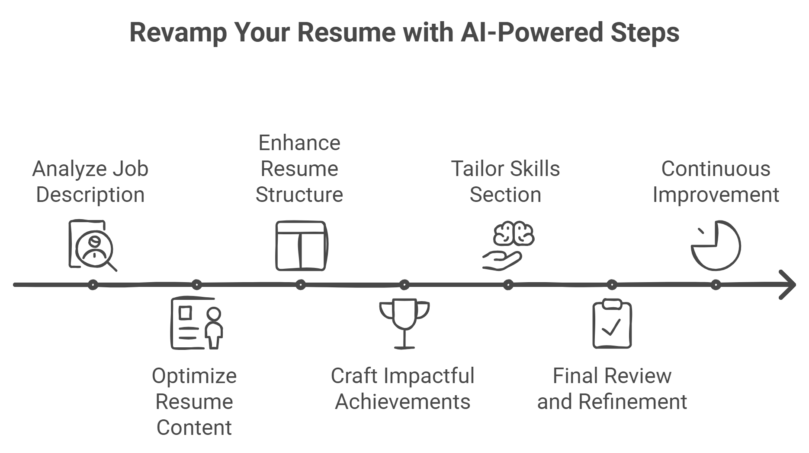

IV. Step-by-Step AI-Assisted Resume Tailoring Process: Your Blueprint for a Killer Tech Resume
Welcome back, resume revolutionaries! In this chapter, we’re diving into a hands-on, step-by-step process for transforming your resume into a job-winning document using AI. This is your personal guide to mastering AI-assisted resume tailoring, from analyzing job descriptions to refining content with AI tools.

A. Analyzing the Job Description: Cracking the Hiring Manager's Code
First things first, we need to decipher what the hiring manager really wants.
1. Using NLP Tools to Extract Key Requirements: The AI Sherlock Holmes
Tool Spotlight: Jobscan AI or TalentNeuron
The Mission: Feed the job description to our AI detective and let it sniff out the crucial clues.
- Input the full job description into the NLP tool, i.e. give Sherlock the case file.
- Review the extracted key skills, qualifications, and responsibilities, a.k.a. your suspect list.
- Note the frequency and prominence of specific terms. The more a term appears, the more desired it is.
STEM-Specific Tip: Keep your tech-dar on high alert! AI tools might miss nuanced technical requirements, so manually review the job description too. You're looking for those sneaky tech skills hiding between the lines, like a bug in perfectly compiling code.
2. Creating a Tailoring Strategy Based on AI Insights: The Master Plan
Tool Spotlight: IBM Watson Natural Language Understanding
The Mission: Use AI to create a tailoring strategy that even 007 would envy.
- Use the AI tool to identify the main themes and concepts in the job description. It's like finding the plot twists in this career thriller.
- Create a word cloud or concept map of the most important terms. Visual learners, rejoice.
- Develop a strategy to address each major theme in your resume. It's time to plan your moves, chess grandmaster style.
STEM-Specific Tip: For research-oriented positions, go full-on cyber sleuth. Use AI tools to analyze recent publications or project descriptions from the hiring organization (a legal and less creepy way of peeking at their browser history).
B. Optimizing Your Resume's Content: Turning Your CV into a Blockbuster
Now that we know what the audience wants, it's time to rewrite your professional story to give them the thrills they're after.
1. Incorporating Key Terms and Phrases: The Keyword Shuffle
Tool Spotlight: Resume Worded
The Mission: Sprinkle those critical keywords throughout your resume like a skinny chef.
- Input your current resume and the job description into the AI tool.
- Review the suggested keyword additions and modifications.
- Strategically incorporate relevant keywords into your experience descriptions and skills section. But remember, we're writing a resume, not keyword Mad Libs.
STEM-Specific Tip: For technical terms and tools, include both the full name and any common acronyms (e.g., "Natural Language Processing (NLP)").
2. Balancing Keyword Usage with Readability: The Tightrope Walk
Tool Spotlight: Grammarly Premium
The Mission: Make your resume read like a bestseller, not a keyword soup recipe.
- After adding keywords, run your resume through a readability checker. It's like spell-check, but for making sense.
- Aim for a balance between keyword optimization and natural language flow. You're a professional, not a SEO-obsessed blogger.
- Use AI suggestions to improve sentence structure and clarity. Let the robots teach you how to sound more human. Oh, the irony.
STEM-Specific Tip: Technical resumes often require longer, more complex sentences to accurately describe projects. Use AI tools to break these down into more digestible chunks without losing technical accuracy.
C. Enhancing Your Resume's Structure and Format: Giving Your CV a Makeover
Now that we've got the content nailed, let's make sure it looks as good as it reads. Time to turn your resume into the Belle of the job app ball.
1. Using AI to Identify Optimal Resume Layouts for STEM Roles: The Blueprint Maker
Tool Spotlight: Rezi AI
The Mission: Find a resume layout that makes your skills pop like a 3D movie.
- Input your resume content into the AI-powered resume builder.
- Review multiple AI-generated layouts optimized for your field.
- Select a layout that best showcases your technical skills and projects.
STEM-Specific Tip: For roles involving data visualization or UX/UI design, consider using an AI-powered tool like Canva to create a visually appealing representation of your skills or project outcomes. Show, don't just tell!
2. Ensuring ATS Compatibility While Maintaining Visual Appeal: The Balancing Act
Tool Spotlight: Jobscan's ATS-Friendly Resume Templates
The Mission: Create a resume that's both robot-friendly and human-eye-catching.
- Choose an ATS-friendly template as your base.
- Customize the template with your optimized content. Time to paint with words!
- Test the formatted resume with an ATS simulator to ensure proper parsing.
STEM-Specific Tip: Use a minimalist design for the main ATS-friendly version, but consider creating a more visually rich supplementary version (with graphs, charts, or project visuals) for in-person interviews or networking events, like having a business casual and a cocktail attire version of your resume.
D. Crafting Impactful Achievement Statements: Turning Bullet Points into Laser Beams
Now, let's transform those boring bullet points into achievements that'll make Tony Stark jealous.
1. Leveraging AI Writing Tools for Compelling Bullet Points: The Phrase Phenom
Tool Spotlight: Textio
The Mission: Craft achievement statements sharper than Occam's razor.
- Draft your initial achievement statements.
- Run them through the AI writing tool for enhancement suggestions.
- Refine your statements based on AI feedback, focusing on impact and specificity. Polish until they shine.
STEM-Specific Tip: Use AI tools to help translate technical achievements into business impacts. For example, improving an algorithm's efficiency can be framed as "Reduced processing time by 30%, saving the company $X annually." Often this just looks like translating your tech magic into the language of money!
2. Quantifying Achievements Using Data-Driven Approaches: The Number Cruncher
Tool Spotlight: ResyMatch.io
The Mission: Back up your bragging with cold, hard data.
- Input your achievement statements and job description.
- Review AI suggestions for quantification and specificity.
- Incorporate relevant metrics and data points into your statements. Remember, in the land of STEM, data is king, queen, and non-binary monarch.
STEM-Specific Tip: For research-oriented roles, use AI tools to help you concisely describe complex findings. Focus on the impact of your research, such as publications, citations, or practical applications of your work. Turn your research paper into a compelling movie trailer.
E. Tailoring Your Skills Section: Sharpening Your Professional Swiss Army Knife
Time to fine-tune your skills section until it sings like a well-tuned algorithm.
1. AI-Powered Skills Gap Analysis: The Crystal Ball
Tool Spotlight: Skillsyncer
The Mission: Identify and bridge your skills gaps faster than you can say "professional development."
- Input your current skills list and the job description. Let the AI be the judge of your skillset.
- Review the AI-generated skills gap analysis, i.e. time to face the music.
- Identify critical skills to acquire or emphasize. Your homework assignment from the AI overlords.
STEM-Specific Tip: For rapidly evolving fields like AI or blockchain, use this analysis to guide your continuous learning. Highlight both your current skills and your ability to quickly adapt to new technologies. Show them you're not just smart, but adaptable.
2. Optimizing Skills Presentation: The Skill Showcase Showdown
Tool Spotlight: LinkedIn Skill Assessments
The Mission: Present your skills like they're on display at the Louvre.
- Take relevant LinkedIn Skill Assessments to validate your proficiencies. Time to put your money where your mouth is!
- Use the results to prioritize and categorize your skills in your resume. Create a skills hierarchy that would make Maslow proud.
- Consider creating a skills matrix that visually represents your proficiency levels. Turn your skills into a TED talk infographic.
STEM-Specific Tip: For technical skills, consider using a tiered system (e.g., Expert, Proficient, Familiar) to provide a nuanced view of your capabilities, like a tech skill RPG character sheet.
F. Final Review and Refinement: The Last Jedi of Resume Editing
We're in the endgame now. Time for those final tweaks that take your resume from great to unforgettable.
1. AI-Assisted Proofreading and Coherence Check: The Grammar Police
Tool Spotlight: Hemingway Editor
The Mission: Polish your resume until it shines brighter than a supernova.
- Run your entire resume through the AI proofreading tool. Let the robot be your spell-check on steroids.
- Address any flagged issues with readability or complexity. Simplify, but don't dumb down.
- Ensure consistency in tone and terminology throughout the document. Your resume should read like a symphony, not a cacophony.
STEM-Specific Tip: While simplifying language is generally good, be cautious about oversimplifying technical terms that are standard in your field. Maintain the appropriate level of technical language for your target role. Remember, you're writing for humans who speak fluent tech.
2. Final ATS Simulation: The Robot Gauntlet
Tool Spotlight: Jobscan
The Mission: Ensure your resume can charm both silicon and carbon-based life forms.
- Run your tailored resume through an ATS simulation tool.
- Review the match rate and any flagged issues.
- Make final adjustments to improve ATS compatibility without sacrificing content quality. Walk the tightrope between robot-friendly and human-compelling.
STEM-Specific Tip: Pay special attention to how the ATS parses your technical projects or publications section. Ensure that critical information isn't lost in the parsing process. You don't want your groundbreaking AI research to be interpreted as a fascination with actual ground breaking.
G. Continuous Improvement Loop: The Never-Ending Story of Resume Perfection
Remember, creating the perfect resume is not a destination, it's a journey. Let's set up a system for continuous improvement that would make even Agile developers jealous.
1. AI-Driven Performance Analytics: The Career Data Scientist
Tool Spotlight: Huntr.co
The Mission: Turn your job search into a data-driven success story.
- Track your job applications and outcomes.
- Use AI analytics to identify patterns in successful applications, like finding the cheat codes for the job market game.
- Continuously refine your resume based on these insights. Evolve like a virus in that sci-fi movie.
STEM-Specific Tip: Pay attention to which technical skills or projects seem to resonate most with employers in your field. Use this information to guide both your resume emphasis and your professional development efforts.
The Grand Finale: Your AI-Assisted Resume Masterpiece
Congratulations, intrepid job seeker! You've now completed the AI-powered gauntlet of resume optimization. Your CV has been analyzed, optimized, reformatted, and polished until it shines like a freshly waxed DeLorean. It's now ready to travel through time and at least one ATS before landing on hiring managers' desks.
Remember, while these AI tools are powerful allies in your job search journey, they're not meant to replace your unique voice and experiences. Think of them as the high-tech suit that enhances your natural superpowers. You're still the hero of this story.
"In the epic saga of job hunting, your AI-optimized resume is your lightsaber – an elegant weapon for a more civilized age. Use it wisely, young Jedi!" - Yoda?
Now go forth and conquer the job market. May the algorithms be ever in your favor. And remember, you've got this!
Key Takeaways: AI-Assisted Resume Tailoring Process
- Use NLP tools to extract key requirements from job descriptions and align your resume accordingly.
- Tailor your resume using AI-driven tools like IBM Watson Natural Language Understanding to ensure your experience matches the job requirements.
- Iterate on your resume by continuously analyzing feedback from AI tools to refine it for each job application.
Start Tailoring Your Resume Today
Ready to begin? Follow the steps in this chapter using AI tools like Jobscan or Watson Natural Language Understanding to tailor your resume for your next job application. Visit our website for additional guides, tools, and personalized services to help you perfect your AI-assisted resume.